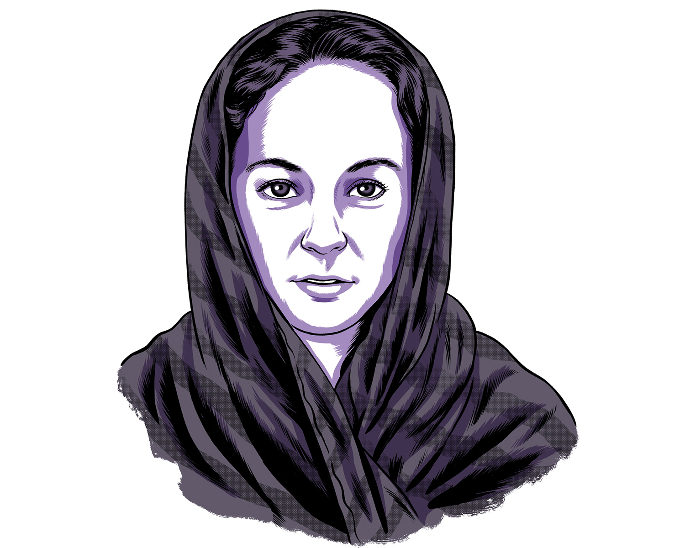
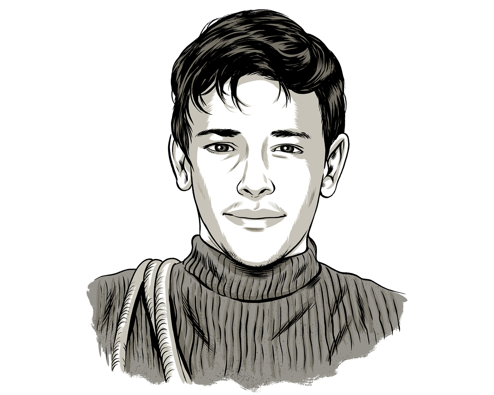
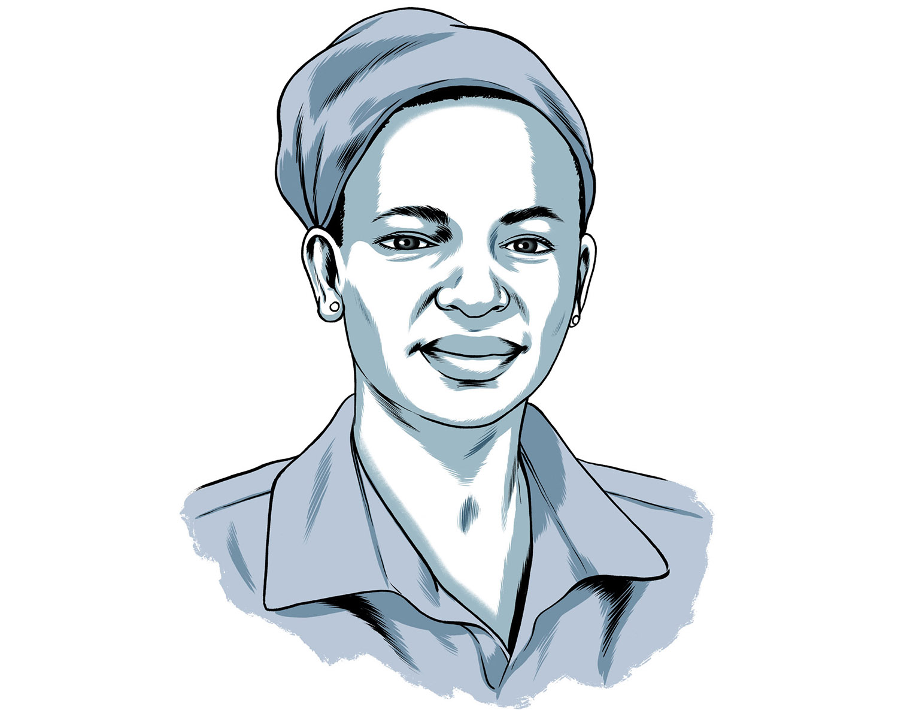
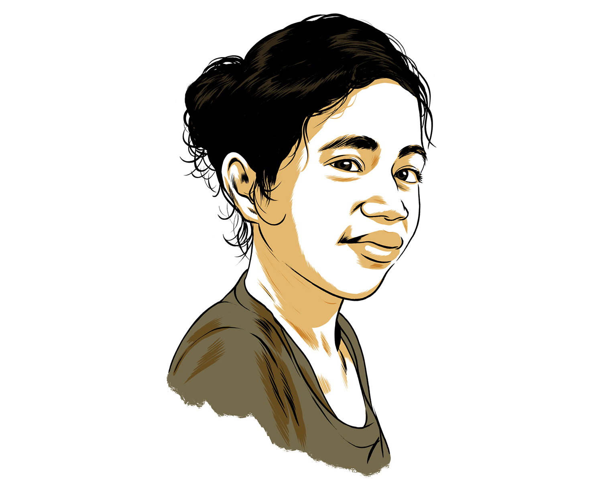

THE IMMIGRANT EXPERIENCE
Interactive: Take an immigrant’s journey
Every American immigrant, from every era, has a story — shaped by laws and demographics, economics and racial attitudes, decisions made in the name of opportunity and love. Here are eight immigrant stories, told through composite characters but based on real laws and historically documented scenarios. Click below to follow their paths, and see how you would deal with the choices they faced.


Published on TK, 2018
Resources and methodology
Our eight migrants are a small representation of the myriad journeys, and points of origin that compose our nation’s history of immigration. These characters are fictional composites based on documented experiences, and they represent how individual encounters with immigration to the United States have always been shaped by race, class, gender, and changes in immigration law.
Their experiences could be wrenching, from the humiliation of being forced to strip to be fumigated, to the pain of mourning a loved one from thousands of miles away. The immigration process could be expensive, complex, hostile, and exclusionary. At the same time, in certain circumstances immigrants were able to find opportunity, security, and love. The fact that each migrant’s journey in our interactive project has at least three possible endpoints reflects how much immigrants’ experiences have been shaped by both personal choices and factors beyond their control.
The Irish emigrated to North America starting in the Colonial period, but began arriving en masse as a result of the Great Irish Famine of 1845–49, and the decades of socio-economic turmoil and depression that followed. Margaret lands in 1853, at the start of the peak decade of Irish immigration to the U.S., when almost one million arrived — and when Margaret would have encountered the nativist reaction to the mass arrival of poorer, Catholic Irish immigrants. At the same time, Margaret’s experience is quite different from that of our other characters, as immigration law affects her in a relatively limited way. Certainly, Margaret must undergo medical examination upon arrival and prove that she is not likely to become a public charge, but she is not required to secure a visa, carry a passport, or worry about maintaining legal residency. Follow Margaret’s journey …

The first immigrants barred from entering the U.S. on the basis of race were Chinese laborers in the late 19th century. Li Wei’s choices reflect the ways in which these immigrants had to navigate policies specifically designed to keep them out or to make it as difficult as possible to attain the normal features of immigrant life: an income, a home, and a family. From permanent separation and a life of bachelorhood, to a clandestine border crossing and fraudulent claim of citizenship, the multiple versions of Li Wei’s family life reflect the many ways in which Chinese men in the late 19th century confronted racist immigration laws. Among the many excellent studies on this topic is Erika Lee’s At America’s Gates: Chinese Immigration During the Exclusion Era. Follow Li Wei’s journey …
Gianni’s story explores two features of the American immigration experience in the early 20th century. His status as a “bird of passage,” traveling between Italy and the U.S. driven by economic opportunity, challenges the idea that all immigrants followed a straight path from migration to settlement in the U.S. Perhaps 30 to 50 percent of the 4 million Italians who arrived between 1880 and 1914 also returned home in that time. Gianni’s experience also demonstrates a crucial moment in American history when, as historian Mae Ngai has described it, the nation’s gates were transformed from being effectively open to closed. Prior to the immigration laws of the 1920s, there were certain restrictions in place (most notably, against arrivals from China) but there were no numerical limits on immigration. In general, prospective immigrants could assume that they would be admitted, so long as they were healthy and had enough money to support themselves. But after the passage of the Emergency Quota Act of 1921 and the laws that followed, securing a visa to live in the U.S. has been dictated by where you are from, whether you have family in the U.S., and how you earn a living. Gianni’s encounter with the law in the 1920s reflects this change. Follow Gianni’s journey …
Hector’s journey follows the multiple paths taken by Mexican migrant laborers in the middle decades of the 20th century. As was typical, Hector entered and exited the country multiple times, sometimes working as a legally contracted bracero and sometimes working without papers. The Bracero Program was an agreement between the U.S. and Mexico through which 4.6 million contracts were signed between 1942 and 1964. Yet millions more workers entered or remained in the country surreptitiously during this period and in the decades that followed. These workers provided undocumented labor for American employers more than happy to pay lower wages and provide worse conditions than bracero regulations required. Historical research on the bracero experience, including work by Deborah Cohen and Mae Ngai, helped in the creation of Hector’s story. The Bracero History Archive is another excellent collection of primary sources on this migratory group. Follow Hector’s journey …
Yesenia’s experience is a window into some of the circumstances and decisions made by those escaping life-threatening violence, conflict, and persecution. Though she is not officially a refugee, her decisions around whether or not to apply for asylum or Temporary Protected Status show how difficult it has been for endangered migrants to secure protection under the law. It also explores the sanctuary movement that emerged in response to forced migrations from Central America in the early 1980s and has experienced a revival in recent years. Yesenia also reflects the experience of the approximately 300,000 residents of the U.S. who currently hold Temporary Protected Status, and the uncertainty created after recent decisions to end those protections. Follow Yesenia’s journey …
Ama’s story explores a portion of the immigrant experience around the turn of the 21st century. Since immigration law dispensed with the National Origins Quota System in 1965, the number of people arriving from non-European countries has exploded. While the vast majority of arrivals have been from Latin America and Asia, approximately 5 million Africans have immigrated since 1990. Ama’s experience also involves the Diversity Immigrant Visa Program lottery, a decades-old immigration program that is currently under threat. Ama’s identity issues as an African woman encountering American immigration and race relations were inspired by research by the historian Violet Showers Johnson, and by the character of Ifemelu in Chimamanda Ngozi Adichie’s Americanah. Follow Ama’s journey…
Hamid’s story reflects two key elements of the immigrant experience in the early 21st century. Since the 1950s, there has been exponential growth in the number of international students enrolling in American schools and universities: from 500,000 in the mid-2000s, to over a million today. These students must negotiate restrictions on how they travel, work, and study, and whether they can remain in the U.S. long term. Because he is also a young Muslim Iranian male, Hamid’s immigrant experience is shaped by security and suspicion in a post-9/11 world and, more recently, by the 2017 travel ban and its subsequent iterations. Follow Hamid’s journey…
Joyce’s story reflects the debate around the Deferred Action for Childhood Arrivals (DACA) program. According to the Migration Policy Institute there are 1.9 million DACA-eligible people in the country, but perhaps only several hundred thousand currently have DACA protection. Some inspiration for Joyce’s story comes from Jose Antonio Vargas’s 2011 New York Times article “My Life as an Undocumented Immigrant,” and from the extensive press coverage of real DACA lives, including those of medical students and other young professionals. Because uncertainty over DACA remains, Joyce’s future in this country is unknown. Follow Joyce’s journey …
For further reading on all of the topics discussed above, we recommend #ImmigrationSyllabus, an online project created by immigration historians affiliated with the Immigration History Research Center at the University of Minnesota and the Immigration and Ethnic History Society. The project seeks to provide historical context to current debates on immigration reform, integration, and citizenship.
Thanks to Barry McCarron, Carly Goodman, Amaan Ismail, Michelle Mittelstadt (of the Migration Policy Institute), Susan Bibler Coutin, and Lydia Lee.
Published on TK, 2018
THE IMMIGRANT EXPERIENCE
1908 Gianni, 18, Sicily, Italy
As a fisherman in Sicily, you can barely make ends meet — and can’t imagine supporting a family. Your two brothers already live in the U.S. and encourage you to join them. You don’t know a word of English, but you decide to make a move thinking you’ll make money as quickly as you can and return. Your dream is to own a fishmongers shop in Palermo.
Start your journey…

Library of Congress
Immigrants in main hall at Ellis Island, New York.
THE IMMIGRANT EXPERIENCE
1910 The journey and arrival
After a 16-day steamship journey from Naples, you arrive at Ellis Island. You undergo a rigorous physical exam looking for signs of contagious disease or a debilitating condition. An immigration official interrogates you about your political affiliations and the amount of money you have with you. Satisfied that you don’t belong to any subversive groups and that the $15 in your pocket is sufficient to keep you from becoming a ward of the state, you are permitted to enter. So are most of the people on board with you. There will be no limit on the number of immigrants until 1921.
Begin your new life…

THE IMMIGRANT EXPERIENCE
1914 Back and forth
Like many young Italian men at this time, you are a “bird of passage” — living in New York doing the backbreaking work of digging subway tunnels, saving money, returning to Italy, and re-emigrating to the U.S. On one trip back to Sicily, you meet Lucia and fall deeply in love. You leave again for New York but promise to marry her the next time you return.

Fred Palumbo/World Telegram & Sun/Library of Congress
Joseph (left) and Ralph Apicella (right) at the Fulton Fish Market.
THE IMMIGRANT EXPERIENCE
1916 Love takes a detour
World War I has broken out and you don’t know when you’ll be able to go back to Italy. In New York, you meet Sofia, the American-born daughter of an Italian immigrant. Sofia’s father owns a thriving fishmonger business, and he hints that he’ll give you a job if you marry. It’s not true love, but it’s security and a possibly lucrative future.
Do you …

Boston Public Library
Bartolomeo Vanzetti (left), handcuffed to Nicola Sacco (right). Norfolk Superior Court, in Dedham, Massachusetts, 1923.
THE IMMIGRANT EXPERIENCE
1921 Setbacks
After marrying Sofia, you start a job in her father’s business and welcome two children. But her father dies unexpectedly and her family loses the store, so you, Sofia, and the children move to Boston to join your brother. You arrive in the city as Italian anarchists Sacco and Vanzetti stand trial for murder. You’re facing postwar isolationism and hostility towards immigrants.
How much should you assimilate?

Boston Public Library
A street in the North End decorated for All Saints Day.
THE IMMIGRANT EXPERIENCE
1917 Making a home
You move to your brother’s Italian neighborhood, get involved in a Catholic parish, and join the local chapter of the Order of the Sons of Italy in America. Your connections in the immigrant community help as you start your own fishmonger business — just as you’d once wanted to in Italy.

Boston Public Library
The Bunker Hill Monument in Boston’s Charlestown neighborhood.
THE IMMIGRANT EXPERIENCE
Starting over … again
You change your name to James and move your family to Charlestown, where fewer Italians live. You find steady work as a fisherman, but you don’t come closer to your dream of owning your own fishmonger business.

New York Public Library
THE IMMIGRANT EXPERIENCE
1919 A wedding in Sicily[a][b]
You return to Italy and marry Lucia. Soon, she is pregnant. You move back to New York, promising you’ll bring her over once you’ve secured a job and a home.

New York Public Library
Mulberry Street in New York’s Little Italy.
THE IMMIGRANT EXPERIENCE
1921 A reunion delayed
With an apartment in Little Italy and a steady job at the Brooklyn Navy Yard, you are ready to summon Lucia and your infant son, Roberto, and make a life in America. But immigration law has changed. Under the Emergency Quota Act of 1921, each country gets a maximum number of immigrants. Visas are given on a first-come, first-served basis at the port of entry, and the number of Italians seeking entry far exceeds the quota. If Lucia and Roberto make the passage, they might get turned away.
How much should you risk?

THE IMMIGRANT EXPERIENCE
1922 The door is closed
Lucia and Roberto arrive in New York, but their ship is held in the harbor. The Italian quotas have already been filled for the month. The boat returns to Italy. Now, your best chance of reuniting with Lucia is to become a citizen — which would allow you to bring your wife and child into the country, regardless of quotas. But the process could take five to six years from your last entry to the U.S. in 1919.

Joel Kimmel
THE IMMIGRANT EXPERIENCE
1926 Reunited
You move to Boston’s North End to live near your brother, work as a fisherman there, and are naturalized. Finally, you apply for visas for your family. In early 1927, Lucia and a now 6-year-old Roberto join you in Boston.
THE IMMIGRANT EXPERIENCE
1925 News from home
A telegram arrives from Italy. Your father has died from influenza. Your aging mother is alone because all of her sons are in America, and you worry for her health. You want to visit her, but you’re concerned that there’s a chance that you might not be able to return.
How much should you risk?
THE IMMIGRANT EXPERIENCE
1926 Stuck in Italy
You go to Italy and care for your mother. But when you try to return to the U.S. several months later, you find you don’t have the papers you need to prove you were a lawfully admitted resident alien. You stay in Italy until Sofia can gather affidavits from your employer and parish priest, which you’ll need in order to return to Boston.

Leslie Jones Collection/Boston Public Library
Hanover Street in the North End.
THE IMMIGRANT EXPERIENCE
Too late
You stay in Boston and send your mother more money — making it harder for you to support your own wife and children. Finally, in early 1926, you become a citizen, but your mother dies before you can get back to Italy.
Boston Public Library
Revere Beach.
THE IMMIGRANT EXPERIENCE
1952 A home in the new world
You buy a house in the nearby beachside suburb of Revere. You’re proud of the long journey to citizenship, but you embrace your ethnic identity, joining the American Committee for Italian Migration. You actively support campaigns to change immigration law to remove the national origins quota system that made your experience so difficult.

Joel Kimmel
THE IMMIGRANT EXPERIENCE
1868 Li Wei, 18, Guangdong Province, China
You live with your parents, who are tenant farmers on a plot belonging to your uncle, a merchant in the port city of Guangzhou. As the third son and illiterate, you have little chance of ever inheriting the farm or buying your own land. You go to Guangzhou to find work, but after a few months in the dockyards, you hear about opportunities in the U.S.
Start your journey …
The mouth of the Pearl River in Guangzhou (then known as Canton).
THE IMMIGRANT EXPERIENCE
Funding your passage
An agent of the Central Pacific Railroad Company tells you about the credit-ticket system: A hiring agency will pay your passage to San Francisco if you sign a three-year contract that pays $14 per month. You will repay the company on a monthly basis until the price of the passage is cleared. Your uncle warns you about the tactics used by devious agents or chu chai tau (swineherds). He offers to cover the cost — but he says that unless you repay him, the cost of your passage will be added to your father’s debt.
What’s the best way to get to the U.S?
Harper’s Weekly/Library of Congress
Customs officers inspecting the belongings of Chinese immigrants at the San Francisco Customs House.
THE IMMIGRANT EXPERIENCE
The journey and arrival
You travel to Hong Kong and then to San Francisco with the Pacific Mail Steamship Company, spending more than a month at sea with poor nutrition and sanitation. When you disembark, you are checked by a health inspector and herded into a detention shed. Customs officers pat you down and rifle through your single bag, searching for opium or anything they could charge a duty on. You gather your belongings and head into San Francisco.
Arnold Genthe/Library of Congress
Ross Alley in San Francisco’s Chinatown.
THE IMMIGRANT EXPERIENCE
Finding work
This is your first experience in a city where most people speak English. An employment agent with a sign in your native Cantonese offers you work near Sacramento, where landowners are employing laborers to drain swampy marshes and transform the delta into farmland. The work is backbreaking, but it is also familiar and you are surrounded by fellow Cantonese speakers.
Library of Congress
Chinese cigar factory in San Francisco.
THE IMMIGRANT EXPERIENCE
1870 Back to San Francisco
After a year of working, you’ve managed to save some money. You have become friends with Li Jie, a fellow Cantonese immigrant who moved to California with his parents as a child. His father, Wang Jie, has set up a cigar-making business in San Francisco; the business has the Spanish-sounding name of Rivera & Sons. Wang Jie is recruiting laborers. The growing Chinese community of San Francisco appeals to you, so you move back.
Harper’s Weekly/Library of Congress
Customs officers inspecting belongings of Chinese immigrants at the San Francisco Customs House.
THE IMMIGRANT EXPERIENCE
The journey and arrival
You travel to Hong Kong and then on to San Francisco with the Pacific Mail Steamship Company, spending more than a month at sea with poor nutrition and sanitation. When you disembark, you are checked by a health inspector and herded into a detention shed. Customs officers pat you down and empty out your single bag, rifling through it for opium or anything they could charge a duty on. You gather your belongings and head into San Francisco.

Joel Kimmel
THE IMMIGRANT EXPERIENCE
1869 Life under contract
You are transported to Utah to work on the final stretch of the Transcontinental Railroad, joining Chinese immigrant laborers from the west and mostly-white immigrant laborers from the east. Many white workers see the Chinese as a threat, and violent incidents break out. After the tent where you eat and gamble is burned, you are sent to harvest cotton in Louisiana. Your debt takes longer to work off than you were led to believe: the company deducts pay for your shabby accommodations and paltry food allocation.

Los Angeles Public Library
Chinese farm worker in northern California.
THE IMMIGRANT EXPERIENCE
1872 A free man
You have completed your three-year contract, and are eager to leave the heat of the Southern plantations. Working your way back west, you spend time in Wyoming maintaining railroads that serve Union Pacific’s coal mines. You hear about opportunities on fruit farms in California’s Sacramento Delta. A return to the farm work you did in China is appealing.
John Thomson/Library of Congress
THE IMMIGRANT EXPERIENCE
1878 Returning home
With a sturdy livelihood, you are able to return home from time to time and provide your parents with the money they need to pay off their debts. On one trip, you are introduced to Ling, the daughter of your mother’s friend. She has a small dowry and you enter into guo dàlǐ,the formal betrothal.. You are finally married during a visit home in 1880. Soon thereafter, you journey alone to the U.S. to make more money, leaving with a heavy heart but hopes for the future.
Steamship boarding pass.
THE IMMIGRANT EXPERIENCE
1881 A separated family
You send for Ling and your infant son Zhang Wei, born in your absence, to join you in California, but you underestimate the difficulty of gaining admission. The Page Act of 1875 prohibits any Chinese woman who might engage in prostitution. But the law is applied overzealously, and, in practice it is extremely difficult for any Chinese women to immigrate. Despite protesting that they are your legitimate wife and son, Ling and Zhang Wei are denied entry and return to China.
John Thomson/Library of Congress
THE IMMIGRANT EXPERIENCE
1882 Attempting reunion
You could attempt to have your family smuggled over the Canadian or Mexican borders, but it is a dangerous and expensive journey. Or you could save money to travel back to China and accompany Ling and your son back. Perhaps if you travel together, you can persuade the authorities that Ling really is your wife.
Which path is less risky?
Public domain
THE IMMIGRANT EXPERIENCE
A clandestine entry
Ling and Zhang Wei sail from Guangzhou to Victoria, British Columbia. Canada does not yet have any restrictions on Chinese immigration so they are admitted without difficulty. You travel to Seattle and pay an opium smuggler $20, a significant amount, to bring them by boat across the Puget Sound. You meet them at a small inlet and head to Seattle.
You’re starting over, but as a family.
Seattle Museum of History and Industry
Anti-Chinese riots as illustrated in Harper's Weekly[c].
THE IMMIGRANT EXPERIENCE
1886 Violence and discrimination in Seattle
The cigar company owned by a friend’s father, Wang Jie, sets up new West Coast office for exports and offers you a job. . The company buys a property near the docks with a small apartment for your family upstairs. You welcome another son and a daughter. But as the economy worsens, white mobs, hostile toward foreign laborers who will work for lower wages, attempt to clear out the Chinese population. Your wife and children are afraid to go outside. You want to return to San Francisco but if you leave, you will lose your position.
What do you do?
Washington State Historical Society
Anti-Chinese handbill.
THE IMMIGRANT EXPERIENCE
1889 In Seattle, but not for long…
When Washington achieves statehood in 1889, its constitution includes a statute that prevents those ineligible for citizenship from owning property. Wang Jie can not continue to own Rivera and Co.’s property. He shutters the Seattle office, and you return to San Francisco.
THE IMMIGRANT EXPERIENCE
1884 An indefinite separation
You have finally saved enough money to travel back to China and pay for a return trip for your family of three, but in the meantime, the Chinese Exclusion Act is passed in 1882, barring entry to all new Chinese laborers. As a resident laborer, you could leave the US and return if you got a readmission certificate, but you fear the law will change again and you won’t be able to return. Your separation from your family is now indefinite.
THE IMMIGRANT EXPERIENCE
Strained family ties
You send a portion of your salary home to your wife and child, in addition to money you are still sending to your aging parents. You then hear that, in your absence, Ling has found another husband and has had more children. Do you continue to send money to your son Zhang Wei, whom you have never met, and who may not even know that you are his father? Or do you leave Zhang with his new stepfather and resign yourself to never meeting him?
What do you do?
Arnold Genthe/Library of Congress
THE IMMIGRANT EXPERIENCE
Settled in San Francisco
You settle in Chinatown with your growing family. Though you will have lived in the U.S. for almost all of your adult life, the 1882 Chinese Exclusion Act made you permanently ineligible for citizenship. You can never return to China to see your parents and your freedom of movement and ability to own property are restricted. With the exception of Zhang Wei, your eldest son, your American-born children are all citizens.
The end of your journey.
Chinese workers in a strawberry field.
THE IMMIGRANT EXPERIENCE
1886 A return to the land
You decide that returning to agricultural work is the best way to support your family. You start on a large commercial farm, but you are eventually able to lease some land and you learn to grow cabbage and potatoes. After the Alien Land Laws are introduced in 1913, one of your U.S.-born sons must take over the lease, but you are now 63 and happy to relinquish control. Although the law prevents you from becoming a U.S. citizen,The Magnuson Act of 1943 repealed Chinese exclusion, so those already in the country could apply for citizenship. Until the Immigration and Nationality Act of 1965, however, China and other Asian countries were only granted a token number of visas for new immigrants. you[d] have a modest but happy life with your wife, children, and grandchildren.
The end of your journey
Arthur Genthe/Library of Congress
THE IMMIGRANT EXPERIENCE
Keeping connected to your son
You continue to send money, encouraging your own family to make Zhang Wei aware of who you are and why you cannot return home. You are able to write to each other and you hope that there will be an opportunity for you to meet someday.
University of Washington
THE IMMIGRANT EXPERIENCE
1907 Reunited at last?
You receive a visit from an American-born son of Chinese immigrants. He explains that the previous year’s earthquake destroyed many of San Francisco’s public records, providing an opportunity for Chinese to claim they are citizens born in the city. He recently met with your son Zhang Wei, now in his mid-20s, in Guangdong and arranged to provide him with a fraudulent U.S. birth certificate. Zhang Wei will only follow this illegal plan with your approval.
What do you do?
Arnold Genthe/Library of Congress
THE IMMIGRANT EXPERIENCE
Growing old surrounded by family
Zhang Wei moves to San Francisco, later traveling to China and returning with a wife. You move in with the couple and are soon surrounded by grandchildren. But due to the 1882 Chinese Exclusion Act, you never become a citizen.
The end of your journey
Arthur Genthe/Library of Congress
THE IMMIGRANT EXPERIENCE
Life as a bachelor
You reconcile yourself to a future without your family. The prospects of remarriage are extremely slim, as immigration regulations designed to reinforce a gender imbalance The Page Act of 1875 aimed to exclude Chinese women. It was motivated by fear of interracial sexual relations and the creation of a settled Chinese community whose children who would be citizens by virtue of having been born in the U.S.in the American Chinese community mean there are very few ethnically Chinese women. The 1882 Chinese Exclusion Act made you permanently ineligible for citizenship, meaning you can never return to China to see your parents, and your ability to own property is restricted.
Joel Kimmel
THE IMMIGRANT EXPERIENCE
1848 Margaret,18, Ireland
Your family live as tenant farmers in County Tipperary until the Great Famine of 1845-49 leaves them destitute. When you are 13, they decide to emigrate to Boston. Your father and mother travel first, with several of their eight children, but your mother and infant brother die during the journey to America. You stay behind in Ireland, living with an aunt and training to be a seamstress while saving money for passage.
Joel Kimmel
THE IMMIGRANT EXPERIENCE
1853 The journey
After five years, you’ve saved up enough to rejoin your family in Boston. Your brother and his family are also emigrating, but they live far away in Liverpool, England. Though you’ve been warned about the dangers of travelling alone, this is a chance for independence and adventure[e] that would rarely be available to young, unmarried women in Ireland.
What should you do?
Harper’s Weekly
THE IMMIGRANT EXPERIENCE
The new world
You travel alone from Queenstown, County Cork — a difficult six-week journey in the dimly-lit, cramped belly of a boat that had previously been used to transport livestock. [f]You land at Quebec and navigate the journey to Boston.
Harper’s Weekly
THE IMMIGRANT EXPERIENCE
The new world
You travel to Liverpool, where your brother lives. Traveling alone from southwest Ireland to England is intimidating for a young woman. Together with your brother and his wife and child, you make the six-week journey by boat.
Library of Congress
THE IMMIGRANT EXPERIENCE
1854 Entering the U.S.
You land in the port of Boston. You’re required to present evidence to immigration authorities that you are not “likely to become a public charge,” and undergo a health inspection, but, like almost all arrivals, you are admitted. You secure a live-in job in the house of the affluent Fairbanks family on Beacon Hill. Your seamstress skills give you responsibilities more senior than a scullery maid’s, but you’re not quite a lady’s maid.
A poster of the American Party, affiliated with the Know Nothings.
THE IMMIGRANT EXPERIENCE
1856 The dark clouds of nativism
The anti-Catholic, anti-immigrant Know Nothings are at the height of their power and Henry Fairbanks and his sons start to support them. Your mistress is kind and can overrule her husband in the house, but the Fairbanks men are increasingly hostile and deny you leave to go to Mass on Sunday mornings. A young Irish woman you know lives nearby[g] Lowell and works a less-skilled job in a linen mill. She writes asking you to join her.
Do you give up your position for a better environment or stay put?
Lowell mill girls.
THE IMMIGRANT EXPERIENCE
Love, and a decision
Though your pay is lower in Lowell, you enjoy making friends and soon meet Louis, an immigrant from Bavaria. He is Catholic, but your family is unhappy that he’s not Irish. Louis proposes marriage and a move to Chicago, where a position in his cousin’s hardware store awaits him. At the same time, you receive a job offer from Eleanor, the daughter of your former employers, to be a trainee lady’s maid — a big step up.
Do you choose love or money and independence?
THE IMMIGRANT EXPERIENCE
A new husband, a new city
You settle in Chicago and have five children. Though happy at home, you feel out-of-place in the German community, so you start attending Mass in the Irish parish of St. Patrick’s. In 1862, Louis becomes a citizen. As his wife, you are naturalized automatically. Although this doesn’t affect your daily life, it gives you a sense of pride and belonging, which feels important given the ongoing tumult of Civil War.
The end of your journey.
THE IMMIGRANT EXPERIENCE
A Lady’s Maid
You take up employment with Eleanor. You lose Louis, but your prospects at the Boston home are excellent. You have a degree of independence[h] that you would never experience as a wife and mother, and you remain close to your family, better able to support your younger siblings.
THE IMMIGRANT EXPERIENCE
1855 A Lady’s Maid
You stick it out in Boston for better work prospects, despite the hostility of your employers. Your family is happy to have you nearby because times are tough: your father and younger brother spend a lot of time away from home working on railroads, digging ditches, and doing other types of construction in New York City and beyond.[i]
Vermont Historical Society
Irish quarry workers.
THE IMMIGRANT EXPERIENCE
1856 Tragedy in Boston
Neither your father nor brother has returned from their last job working in a quarry in Virginia. They may be dead, or may have abandoned the family, but either way, they’re not expected to return any time soon. This leaves your sister Ellen, now 16, caring for your younger siblings.
Should you leave the Fairbanks household and move back home to help, or stay in your job so you can contribute?
Irish Archives
THE IMMIGRANT EXPERIENCE
Back home
You and Ellen share the burden of maintaining the home, caring for the younger children so they do not have to work outside of the home as much as you do. You work in the same textile factory as Ellen, and take some piece work home at night. Because of your skills as a seamstress, you move quickly into a floor manager’s position, which increases your salary slightly.
THE IMMIGRANT EXPERIENCE
1858 Love, and a new beginning
You meet John O’Leary, a tailor from County Cork. At 45, he is significantly older than you, but with his steady employment at a Cambridge drapers, he offers the chance to leave the drudgery of the textile factory behind. You marry and move to an apartment large enough for your younger siblings, as well. John acquires citizenship in 1860 — which means that you, automatically and unceremoniously, become a citizen, too.
The end of your journey.
Burns Library, Boston College
“Missing Friends” ad from the Boston Pilot.
THE IMMIGRANT EXPERIENCE
Searching
With the guidance of your parish priest, you place a notice in the “Missing Friends” section of the Catholic Boston Pilot newspaper, appealing for news of your father, Michael (last heard of bound for New Orleans) and your brother Patrick (last heard of headed west, possibly for San Francisco). After several months, your priest brings news from New Orleans. Your father succumbed to cholera while digging ditches the previous year. There is no news of Patrick.
THE IMMIGRANT EXPERIENCE
1875. Becoming your own boss[j]
Now 42, you’ve been in Boston for more than half your life. You have managed to save money working as a lady’s maid for Eleanor, even while helping to support your siblings. You leave your position, buy a house in the North End, and take in lodgers. Unmarried, you can not claim citizenship through a husband. It hardly matters, since women won’t have the right to vote for more than 40 years.
The end of your journey.
THE IMMIGRANT EXPERIENCE
1992 Ama, 26, Kumasi, Ghana
You’re a pediatric nurse at the Komfo Anokye Teaching Hospital. Eager to progress, you win a full scholarship to study pediatric oncology at the University of Maryland, Baltimore. A few weeks later, your father dies suddenly. Your mother wants you to go, but how can you leave her? On the other hand, you know your mother will need the money you can earn in the U.S.
What do you do?
The Johns Hopkins Hospital
THE IMMIGRANT EXPERIENCE
1993 A student visa
Securing a student visa is a complicated process: You assemble many requisite documents and travel six hours by bus to Accra for your interview at the U.S. Embassy. The F1 visa you earn only allows you to work on campus, and you find that most of the jobs are already gone. At the end of your first year, you find a nurse’s assistant summer position at The Johns Hopkins Children’s Center.

An agency video advertising help getting a nurse green card.
THE IMMIGRANT EXPERIENCE
1995 Staying on
You miss your mother terribly, but you love your work and you know how important it is to send money home. A nursing agency advertises that it can help you secure a nurse green card. There are other ways to come back to the U.S. from Ghana as a nurse, but they take a lot longer.
What do you do?
Ward rounds at the Komfo Anoyke Teaching Hospital.
THE IMMIGRANT EXPERIENCE
1996 Trying the Lottery
A masters from an American university earns you a more senior role at the Komfo Anokye hospital. But your salary is low, and with inadequate equipment and rolling blackouts, working in a hospital in Ghana is a far cry from nursing in the U.S. You see a notice in the Free Press newspaper[k] about the Diversity Visa Lottery. Other than the cost of postage to the U.S., it’s free, so you have nothing to lose — and soon a letter arrives announcing you have won.
THE IMMIGRANT EXPERIENCE
1995 Diversity visa
You see a notice about an upcoming lottery for visas to emigrate to the U.S. An agency will help you navigate the difficult American immigration system for $50. If you win, you can spend a few years working and saving and then either return to Ghana and live well, or bring your mother to live with you in the U.S. You submit an application, but hear nothing.
THE IMMIGRANT EXPERIENCE
Playing the lottery again
In early 1996, you again see advertisements for the visa lottery. It seems like all of the young people you know are applying. Your uncle in Albany, New York tells you there is no need to pay an agency — the application form is very basic. He has heard that the Ghanaian postal service has been tampering with applications and insists you send the application to him to mail. Soon, you receive a letter announcing that you have won a diversity visa.
THE IMMIGRANT EXPERIENCE
The drawbacks of winning
You visit a local agency set up to guide visa lottery winners. They warn that there are twice as many winners as available visas. If your application is approved, you must move to the U.S. within six months. Can you spare over $600 for the fee, knowing you could be rejected? As a qualified nurse, you have other ways to move to the U.S., but they take much longer.
What do you do?
THE IMMIGRANT EXPERIENCE
Getting your green card
You submit your immigrant visa application, along with your high school diploma and a police report, and you manage to get an early appointment at the U.S. Embassy in December. After your medical exam, some additional immunizations, and your interview, your visa is finally issued with an expiration date of June, 1997[l].
Wikimedia Commons
Immigration for arrivals at JFK Airport.
THE IMMIGRANT EXPERIENCE
1997 Arrival
You arrive as a permanent resident with full work authorization, but you will have to pass an exam before you can practice. Near Albany, where your uncle lives, you find two job prospects. The first is as a nurses’ assistant in a cancer treatment facility. It will be a step down from nursing, but comes with benefits. The other is as a live-in nanny for a wealthy family in Hudson. It pays under the table, but doesn’t include health insurance.
What do you do?
Wikimedia Commons
THE IMMIGRANT EXPERIENCE
1998 An American nurse
You sign a contract with an American nursing recruitment agency, which promises to secure you a permanent residency visa and the ability to work as a nurse. The entire process takes over a year and requires multiple trips to the U.S. Embassy, a rigorous medical exam, many vaccinations, and a seemingly interminable collection of certificates and transcripts. At last, you head to New Brunswick, New Jersey to take up your contracted post at a children’s hospital. It isn’t your dream job, but it is a start.
Wikimedia Commons
THE IMMIGRANT EXPERIENCE
1995 An American nurse
You sign a contract with the recruiting agency. With your nursing licence in hand, the agency processes your application for an employment-based visa. After two years at a children’s hospital in New Brunswick, New Jersey, you’ve fulfilled the terms of your contract. You decide to stay on to save money for when you naturalize and can apply for a permanent residency visa for your mother.
Wikimedia Commons
THE IMMIGRANT EXPERIENCE
1998 An American nurse
Your time as a nurse’s assistant at the cancer treatment facility in Albany has not been easy. You frequently clash with RNs less experienced than you, and you miss your mother terribly. Finally, almost a year after you arrive, you receive your licence to practice as a Registered Nurse in the state of New York. You find a position at a large hospital in Albany, but you are eager to find a job in New York City.
Joel Kimmel
THE IMMIGRANT EXPERIENCE
Your dream job
You are offered a position in Pediatric Oncology at Mount Sinai Children’s Hospital in New York City. It is your dream job in your dream city, where you can plug into a thriving Ghanaian-American community and feel connected to home again. You’ve found a store that sells boxed fufu and you can finally get your hair braided as you used to. Your new job has reignited your ambition for career progression.
Boggy/Adobe
THE IMMIGRANT EXPERIENCE
1999 Finding love
You meet Paul, a lawyer from Richmond, Virginia, and fall in love. After several months, you travel to meet Paul’s parents. Paul fears that his father will have a racist reaction when he sees his white son with a black girlfriend. You reason that his father’s bigotry may be directed at African Americans whereas you are an immigrant from Africa, but the visit home is a harsh lesson in race relations.
Boggy/Adobe
THE IMMIGRANT EXPERIENCE
2000 Choosing love
After dating Paul for over a year, you begin to talk about marriage. But Paul has barely spoken to his father since your disastrous visit, and you worry about how the conflict might affect your relationship. You also worry that marrying a non-Ghanaian will further distance you from your culture. Is your love for each other strong enough to withstand these pressures?
Do you agree to marry Paul?
Wikimedia Commons
THE IMMIGRANT EXPERIENCE
1998 An unplanned pregnancy
For a few months, you have been dating James — it’s fun, but you don’t love him — and now you realize that you are pregnant. James proposes marriage so that you can be covered by his health insurance, but you doubt the relationship will work out. On the other hand, you worry that your mother, a fervent evangelical Christian, might reject you and your child if you remain unmarried. Could you support yourself and your child as a single mother?
Do you marry James?
Adobe
THE IMMIGRANT EXPERIENCE
1999 Becoming a mother
You now have a beautiful daughter, named Awesi because she was born on a Sunday. James objected to giving her an African name, but you put your foot down. James wants you to stay home full time, but you want a career that will allow you to travel to Ghana as much as you can. You reach a compromise: you work part-time as a nurse’s assistant in a cancer treatment facility and, in between caring for Awesi, you study for your nursing license exam.
Then you get your exam results…
Joel Kimmel
THE IMMIGRANT EXPERIENCE
2001 A new opportunity
You pass your exam and are offered a position in Pediatric Oncology at Mount Sinai Children’s Hospital in New York City. You know that James will not move, but your marriage has been loveless, and you want to live near a vibrant Ghanaian community. But as a single mother, it will take you even longer to save the thousands of dollars you’ll need to pay for your naturalization and for a permanent residency visa for your mother.
What do you do?
Joel Kimmel
THE IMMIGRANT EXPERIENCE
2008 Ghana in the Bronx
You’ve settled in the Bronx, where many people from Kumasi live. Awesi grows up a true Ghanaian American: She dances to both Beyonce and Highlife music and is as comfortable eating fufu as pizza by the slice. You become a citizen in 2002 so that you can bring your mother to the U.S. as a permanent resident. It takes several years to save for the almost $4,000 in fees, but more than a decade after you left her behind, your mother arrives to live with you.
The end of your journey
Adobe
THE IMMIGRANT EXPERIENCE
2003 A family circle in Albany
Your marriage comes to an end, but you decide to stay in Albany to save enough to apply for your mother’s permanent residency. You become an American citizen in 2001. In a few years, you’re able to cover almost $4,000 in fees and prove you can support your mother as a dependent. Finally, six years after you left her behind in Ghana, your mother arrives to live with you and and Awesi.
The end of your journey
Adobe
THE IMMIGRANT EXPERIENCE
1999 A single mother
You are the proud mother of a beautiful daughter, named Awesi because she was born on a Sunday. You to work and save money until late in your pregnancy, but cannot stay on as a nanny after Awesi is born. You move near your uncle and take a job as a nurse’s assistant.
Adobe
THE IMMIGRANT EXPERIENCE
2006 A family circle in Albany
Awesi grows up to love school and her friends, but it pains you that she knows so little about her heritage. You receive your nursing license and work long hours to pay for your naturalization and the $4,000 in fees required to secure your mother’s permanent residency. Finally, almost a decade after you left her behind, your mother arrives to live with you, bringing a connection to your homeland. The end of your journey
Adobe
THE IMMIGRANT EXPERIENCE
2008 A full life
You have been happily married for nine years with a son, Kofi, a daughter, Awesi, and a job that you love in pediatric oncology. You see Paul’s father very rarely, but his mother maintains close contact. You acquire citizenship soon after you marry, and immediately apply to bring your mother to live with you. You can afford the $4,000 in fees and prove that you have sufficient resources to support her. You are reunited in 2002, five years after you left her alone in Ghana.
The end of your journey
Adobe
THE IMMIGRANT EXPERIENCE
2004 Mother and daughter reunited
You focus all your energies on your career, and move to the Bronx after hearing about the thriving Ghanaian community there. You became a citizen in 2002 and save enough to cover the almost $4,000 in fees required to secure your mother’s visa and prove you can support her. Finally, seven years after you left her behind in Ghana, you are reunited with your mother at JFK Airport.
The end of your journey
THE IMMIGRANT EXPERIENCE
1990 Joyce, 8, Philippines
You fly to Chicago with your parents and your younger brother Adrian for what you’re told is a three-week visit with your uncle, aunt and cousins. You’re confused about why your Lolo (grandfather) and Lola (grandmother) were crying when they waved you off at the airport in Manila. At the end of your trip, your parents ask if you’d like to live in Chicago. You’ll miss Lolo and Lola, but you’ve had such a great time with your cousins that you say “yes.”
THE IMMIGRANT EXPERIENCE
1998 Undocumented
Now that you’re 16, you want to apply for a driving permit. You ask your parents for your Social Security card to bring to the DMV and your father reveals a secret: You have all been living in the U.S. without the correct visas. He has tried to adjust his status to permanent resident through his brother, now a citizen, but the waiting list for the Philippines is impossibly long. Some years ago, he bought you a fake Social Security card.
What do you do?
California Department of Motor Vehicles
THE IMMIGRANT EXPERIENCE
Breaking the law
After a long wait at the DMV, you hand over your documents. The person behind the counter tells you in a low voice that it was easy for her to spot a fake card. Not unkindly, she tells you to leave the DMV now and never try to use this card again.
Seb_Ra/iStock
THE IMMIGRANT EXPERIENCE
Keeping a secret
You throw yourself into high school and get great grades. Your relationship with your parents has become difficult as your emotions flip from anger for putting you in this position to understanding why they made this choice. In your heart you believe the U.S. is your home: if you work hard and prove that you deserve to be here, all will be well. Still, you don’t tell even your closest friends your secret.
Cesar Okada/iStock
THE IMMIGRANT EXPERIENCE
1999 Breaking your silence
At the beginning of your senior year, your favorite teacher, Ms. Phillips, asks if you’ve thought about your college options. With your high SAT score last spring, she’s eager to help you look into applications and scholarships. You’ve been dreading this moment: You don’t know if an undocumented person can even go to college, and you’re too scared to ask anyone to help you find out.
Do you tell Ms. Phillips?
Adobe
THE IMMIGRANT EXPERIENCE
Seeking help
Ms. Phillips is sympathetic and tells you that you’re not the first person at the school to have this problem. The guidance counselor, Mr. Wu, helped another undocumented student get into a Chicago-area college a few years ago. She also tells you that some politicians want to introduce legislation to protect young undocumented people like you. This gives you hope that you might achieve legal status some day. You agree to talk to Mr. Wu.
University of Illinois, Chicago
Welcoming new students to the University of Illinois, Chicago.
THE IMMIGRANT EXPERIENCE
College
Mr. Wu tells you that you can enroll in college. The major barrier will be paying for it. As an undocumented immigrant, you cannot apply for state or federal financial aid. He tells you about a private scholarship program set up for high-achieving students who would be the first in their families to attend college. The organization doesn’t care about immigration status. You win a scholarship and are accepted into University of Illinois, Chicago on a pre-med degree program
University of Illinois, Chicago
The campus of the University of Illinois, Chicago.
THE IMMIGRANT EXPERIENCE
A summer placement
At the end of your second year at UIC, your biology professor tells you about a summer volunteering program in rural Nicaragua. This experience would help you with a medical school application, but you don’t have a valid passport and, even if you did, leaving the U.S. would almost certainly mean you’d be barred from re-entry. You don’t want your professor to think that you’re not trying hard enough.
Do you tell your professor about your immigration status?
Adobe
THE IMMIGRANT EXPERIENCE
2000 Working under the table
You graduate from high school with an excellent GPA, but the most important thing now is finding a job that won’t require you to produce a Social Security card. Since you moved to the U.S., your mother has worked as a nanny for families in some of the wealthier suburbs of Chicago. She finds you a similar job for the summer. You decide to keep your head down and earn money.
Smithsonian Institution
THE IMMIGRANT EXPERIENCE
A death in the family
Word comes from the Philippines that your Lola has died. Your mother, wracked with guilt that she cannot attend her own mother’s funeral, sinks into a deep depression. You urge her to seek professional help, but she is too scared to give her information to a doctor. Another undocumented nanny tells you that doctor-patient confidentiality means that personal details cannot be shared with the government. Reassured, your mother seeks help.
Adobe
THE IMMIGRANT EXPERIENCE
Pursuing new goals
You realize that the fear of coming out of the shadows prevents many undocumented people from seeking the medical help they need. You decide that improving access to healthcare for undocumented immigrants is something you feel passionate about and want to pursue as a career. This will require going to college. You decide to go back to Ms. Phillips and seek her help after all.
University of Illinois, Chicago
Welcoming new students on campus.
THE IMMIGRANT EXPERIENCE
2000 Seeking help
You contact Ms. Phillips and tell her your secret. She is sympathetic, and even tells you that you’re not the first person at the school to have had this problem. The school guidance counselor, Mr. Wu, helped another undocumented student get into a Chicago area college a few years ago. You’re scared about sharing your secret, but Ms. Phillips has given you hope. You agree to talk to Mr. Wu.
University of Illinois, Chicago
Graduation day at the University of Illinois, Chicago.
THE IMMIGRANT EXPERIENCE
2002 Graduation
Your professor finds an alternative summer placement for you within the U.S. You graduate from UIC at the top of your class. But while some medical schools will accept you despite your status, the financial challenges are formidable. You cannot apply for federal loans, and no private agency will give a loan to someone who won’t be able to register to practice medicine at the end of her studies. You hope for a change in the law before too long.
THE IMMIGRANT EXPERIENCE
Finding work
You start to wonder if playing by the rules is the right way to navigate life when undocumented. You want experience in healthcare and find a non-medical position at a private cancer treatment facility. If you use the fake Social Security number on your W-4 employment form, you are not likely to get caught, and you’d be able to pay taxes, which you think could help in future attempts to adjust your status.
Do you break the law and use the fake Social Security card?
University of Illinois, Chicago
Graduation day at the University of Illinois, Chicago.
THE IMMIGRANT EXPERIENCE
2004 Graduation
You graduate with good grades but little experience that might boost a medical school application. You still want to work in health care and find a non-medical position at a private cancer treatment facility. If you use the fake Social Security card on your W-4 employment form, you aren’t likely to get caught.
Do you break the law and use the fake Social Security card?
Andy Thayer/Chicago Indymedia Center
U.S. immigration reform protests in Chicago on May 1, 2006.
THE IMMIGRANT EXPERIENCE
2006 Activist
You hear that local Latino activists are planning a demonstration to protest an anti-immigrant bill that was approved in the House of Representatives last December. If it passes, your entire family will be classified as felons. Although apprehensive about taking part in a public protest, you attend the demonstration in Chicago in March. As marches and strikes by immigrant workers spread across the country, you throw yourself into the movement and help to organize a May Day boycott of schools and places of work by immigrants.
People Images
THE IMMIGRANT EXPERIENCE
Finding love…
Through your activism you meet Michael, a U.S.-born Mexican American[m] whose parents are undocumented. After just two months of dating, he suggests that you get married. As his wife, you’ll be able to get permanent residency, which would allow you to go to medical school and eventually legalize your family’s status. It feels too soon to make such a serious commitment, but becoming a legal immigrant[n] would transform your life.
What do you do?
Wallpaper Wiki
THE IMMIGRANT EXPERIENCE
A green card marriage?
You talk to an immigration attorney before getting married. You learn that because you entered the country legally on a B-2 tourist visa, you can apply to adjust your status. But the process will cost thousands of dollars and your chances of success are low. You’d need proof of a legitimate marriage (a joint bank account, lease, photographs of your life together), and the fact that you are undocumented will make your fast marriage look suspicious. You tell Michael to be patient and delay the marriage.
Official White House photo by Sonya N. Hebert
President Obama announcing the Deferred Action for Childhood Arrivals program on June 15, 2012.
THE IMMIGRANT EXPERIENCE
2012 DACA
You break up with Michael and become active in Chicago’s immigrant rights network. In June, after years of Congressional inaction on the DREAM bill, President Obama announces the Deferred Action for Childhood Arrivals program. DACA is designed for people like you, who arrived under the age of 16 and before 2007, graduated from high school, and have no serious criminal convictions. You gather the relevant documents, pay the $495 fee and receive approval. You are now protected from deportation and you have authorization to work.
Heather Eidson/Loyola University Chicago
DACA students gather prior to Match Day 2018 events at Loyola University Chicago's Stritch School of Medicine.
THE IMMIGRANT EXPERIENCE
Medical School
Now that DACA has given you authorization to work, you return to your dream of practicing medicine. The Stritch School of Medicine at Loyola University accepts DACA recipients. They even have a program that provides interest-free loans if you spend your first four years after you qualify working in an underserved community. Your excellent grades and years of experience help you secure admission. You begin your studies in September 2013.
Joel Kimmel
THE IMMIGRANT EXPERIENCE
2017 Plunged into uncertainty
In your fourth year of medical school, Donald Trump wins the presidency after campaigning with a promise to repeal DACA. Attorney General Jeff Sessions[o] announces that the program will be rescinded, describing people like you as lawbreakers who threaten the safety and livelihoods of American citizens. If you lose work authorization, you won’t be able to pay back your loans. More worryingly, the authorities have all of your information. You have never felt more unwelcome in the country that has been your home.
The end of your journey
Adobe
THE IMMIGRANT EXPERIENCE
Nannying
Your mother helps you to find a job as a nanny, and you meet several other nannies who are also undocumented. You come to rely on each other for support and help navigating life as a person out of status. But you still want to pursue a career in health care. Your friends have been discussing the “DREAM Act,” which has been proposed and debated in Congress. Imagining you might someday get a chance to legalize, you want to improve your position before then.
THE IMMIGRANT EXPERIENCE
Finding work
You want to work in health care, and you spot a position as an orderly at a private cancer treatment facility. Your nanny friends tell you that if you use the fake Social Security number your father gave you 6 on your W4 employment form, you are not very likely to get caught. With this job you’ll be able to pay taxes, which you think might help in future attempts to adjust your status.
Do you break the law and use the fake Social Security number?

U.S. Customs and Immigration Services
THE IMMIGRANT EXPERIENCE
2002 Finding love, adjusting your status
You meet Christopher, an I.T. technician at Loyola University, and work up the courage to tell him your secret. He is concerned, but understanding, and after four years, you marry and apply for a green card. Because you entered the country legally on a B-2 tourist visa, you can adjust your status without leaving the U.S. If you had entered illegally, you would have to return to your home country, which would probably result in a ten-year ban from the U.S. Becoming a permanent resident will be expensive, but with two good salaries, you can afford it.
U.S. Customs and Immigration Services
THE IMMIGRANT EXPERIENCE
2002 Christopher, and a new status
You meet Christopher, an I.T. technician at Loyola University. He is understanding but concerned when you tell him your secret. After four years, you marry and apply for a green card. Because you entered the country legally on a B-2 tourist visa, you don’t have to leave to become a permanent resident. If you had crossed the border illegally, you would have had to return to your home country, probably resulting in a ten-year ban. But you’re shocked at the cost of the application and fees.
Do you save up to adjust your status, or delay for a few years?
Adobe
THE IMMIGRANT EXPERIENCE
2008 Starting a family
You want to start a family, but you assume that without health insurance, you’ll have to pay out of pocket for your prenatal care and the birth. Christopher suggests taking out a loan — ostensibly for home improvement, but you’d use it for medical bills. You’re worried about the financial burden, and about taking on the responsibility of motherhood when your status in the country is so uncertain.
What do you do?
Adobe
THE IMMIGRANT EXPERIENCE
Becoming a mother
Your nanny friends tell you that a number of nonprofit clinics in the city provide subsidized prenatal care for undocumented women. Crucially, the labor and birth are classified as a medical emergency and are covered by Medicaid. Your son Adrian is born in 2009. You recover quickly without need for further medical treatment.
Adobe
THE IMMIGRANT EXPERIENCE
Becoming a mother
Your nanny friends tell you that a number of non-profit clinics in the city provide subsidized prenatal care for undocumented women. Crucially, the labor and birth are classified as a medical emergency and are covered by Medicaid. Your son Adrian is born one year later. You recover quickly without need for further medical treatment.
Official White House photo by Sonya N. Hebert
President Obama announcing the Deferred Action for Childhood Arrivals program on June 15, 2012.
THE IMMIGRANT EXPERIENCE
2012 DACA
In June, President Obama announces the Deferred Action for Childhood Arrivals program. DACA is designed for undocumented people like you, who arrived in the U.S. under the age of 16 and before 2007, graduated from high school, and have no serious criminal convictions. But you are apprehensive: this will mean registering with the authorities. What if the government reverses DACA some day and deports those who registered?
Do you apply for DACA?
Wikimedia
THE IMMIGRANT EXPERIENCE
A sense of security
After gathering documentation and paying your $495 application fee, you receive DACA approval. This means you can finally apply for the driver’s licence that marked the beginning of your life as an undocumented person in America. You look for a bigger family home further out of the city, plan for another child, and are filled with hope for your family’s future.
Joel Kimmel
THE IMMIGRANT EXPERIENCE
June, 2017 Plunged into uncertainty
Since the election of Donald Trump, who campaigned with a promise to repeal DACA, you have been dreading this moment. Attorney General Jeff Sessions announces that the program will be rescinded. In this new climate, your parents talk about returning to the Philippines, and your brother, also a DACA recipient, is terrified that a minor conviction for marijuana use in high school might be used as an excuse to deport him. You have never felt more unwelcome in the country that has been your home.
The end of your journey
Joel Kimmel
THE IMMIGRANT EXPERIENCE
June 2017 Plunged into uncertainty
Attorney General Jeff Sessions announces that DACA will be rescinded, a move expected since Donald Trump’s election. While your decision not to apply for DACA means that you are still in the shadows, this shift in policy is terrifying. What will happen to your parents, your brother, and your own family? Terrified of what the future holds, you have never felt more unwelcome in the counry that has been your home.
The end of your journey
Brooke Collins/City of Chicago
Taking the oath of allegiance at a naturalization ceremony.
THE IMMIGRANT EXPERIENCE
2014 Naturalizing
You become a permanent resident in 2008. Then you have to wait three years before you can begin your naturalization process. Finally, you are sworn in as a U.S. citizen. Your parents attend the ceremony, looking forward to the day when they, as the parents of a U.S. citizen, can receive their green cards. Almost 25 years after you arrived in Chicago as a child, you are finally a citizen of the only country you ever considered home.
The end of your journey
Joel Kimmel
THE IMMIGRANT EXPERIENCE
1950 Hector, 18, Zacatecas State, Mexico
You live in a small village outside Villaneuva, the youngest of nine in a family barely making ends meet raising cattle. For as long as you can remember, the male family members have gone north to work seasonally on the railroads and large farms in California. During World War II, your older brothers worked in the U.S. as part of the bracero program[q][r]. You’ve always assumed you will do this, too.

A. D. White Architectural Photographs, Cornell University
Zacatecas
THE IMMIGRANT EXPERIENCE
The Bracero[s] Program
Bracero contracts guarantee a wage of 50 cents an hour — ten times what you earn at home — so you travel 65 miles to Zacatecas to get approval from the provincial Gobernación. You discover that you are expected to pay a mordida (bribe) to the official in charge. Someone tells you there are ways to work in the U.S. that don’t require a contract. This type of illegal work means lower wages and poorer conditions, but it’s still more than you would earn in Mexico.
Do you cross illegally or save up for a mordida?
Wikimedia
On the banks of the Rio Grande.
THE IMMIGRANT EXPERIENCE
An illegal border crossing
You travel 400 miles by bus to the border near Laredo, Texas. Along with 12 others, you wait until dark and cross the border on a country road in the back of an open-topped truck. There is no sign of Border Patrol, and one of the men tells you that both your smugglers and the border guards have been paid by the farmer for whom you will be working. A Mexican foreman greets your group, calling you “Mojados” (“Wetbacks”).
Joel Kimmel
THE IMMIGRANT EXPERIENCE
Life as a “Mojado”[t]
You work illegally on a large cotton plantation east of Laredo owned by Edward Wilson. The backbreaking work earns you 25 cents an hour, half as much as a bracero worker[u] might make, but still a much better wage than you made at home. Wilson offers to keep you and the other undocumented workers on through the winter months and into the new planting season.
Do you stick it out despite the conditions and lower pay? Or do you return to Mexico and try again to secure a legal contract?
Leonard Nadel/Archives Center, National Museum of American History
Bracero [v]workers are fumigated with DDT as part of the entry process into the U.S., 1956.
THE IMMIGRANT EXPERIENCE
1951 Trying again for a legal contract
You save enough to secure a bracero contract, pay your mordidas, and travel over 1,000 miles by bus to the border reception center at Ciudad Juarez. You are interviewed, photographed, fingerprinted, and given a chest X-ray to check for tuberculosis. Your naked body, clothes and bag are fumigated to ensure you don’t carry hoof-and-mouth[w] disease into the U.S. Finally, you receive a work card for employment as a “harvest hand” in Texas. Your contract will last eight weeks, earning you 50 cents an hour for picking vegetables, plus $1.15 a day for food.
You cross the border legally this time.
Leonard Nadel/Archives Center, National Museum of American History
Bracero [x]workers are fumigated with DDT as part of the entry process into the U.S., 1956.
THE IMMIGRANT EXPERIENCE
1951 Securing a contract, second attempt
You make a second attempt at securing a contract. After paying your mordidas, you travel over 1,000 miles by bus to the border reception center at Ciudad Juarez. You are interviewed, photographed, fingerprinted, and given a chest X-ray to check for tuberculosis. Your naked body, clothes and canvas bag are fumigated. Finally, you receive a work card for employment as a “harvest hand” in Texas. Your contract will last eight weeks and earn you 50 cents an hour for picking vegetables, plus $1.15 a day for food.
You cross the border legally this time.
Leonard Nadel/Archives Center, National Museum of American History
THE IMMIGRANT EXPERIENCE
A bracero in Texas
You earn good money and enjoy the camaraderie in the camp. But the terms of your contract are not being honored: you only earn 40 cents an hour, sleep on a broken cot in a shed with a canvas covering, and get scanty, poor-quality provisions. When your contract ends, some choose to stay on illegally, but you return home. You haven’t seen your parents in over two years and your father is unwell. You feel certain you’ll be able to secure another contract when you’re ready to return.
Leonard Nadel/Archives Center, National Museum of American History
THE IMMIGRANT EXPERIENCE
1954 Securing a second bracero contract
Since you last secured a bracero contract, the process has become more onerous. To secure approval, you have to travel over 1,000 miles to Chihuahua. While there are plenty of contracts, there are even more men hoping to secure one. Some wait at reception centers for up to ten days before being seen. You know a smuggler in Zacatecas who will help get you across the border and find you work without a contract.
What do you do?
Hal Higgins/Digital Public Library of America
Farm owner supervising braceros as they harvest sugar beets and toss them in the back of the truck.
THE IMMIGRANT EXPERIENCE
Overstaying your contract
You secure another bracero contract, harvesting sugar beets in Hidalgo County, Texas. This time, the violations of your contract are even worse. You are moved between farms frequently, and sometimes expected to sleep in a truck bed. One employer tricks your crew into signing blank receipts and you find he has paid you only 30 cents per hour, not the contracted 50. You see little point in playing by these rules. At the end of your eight week contract, you decide to stay in the U.S. illegally.
U.S. Border Patrol Museum
The U.S. Border Patrol packed[y] Mexican immigrants into trucks when transporting them to the border for deportation.
THE IMMIGRANT EXPERIENCE
1954 “Drying Out”
You are now working illegally on Eugene Agnew’s sugar beet and tomato farm south of San Antonio. At 25 cents an hour, the pay is much lower than a bracero’s and the food sometimes makes you sick. U.S. immigration authorities, raiding workplaces across the country as part of “Operation Wetback,” pick you up and take you to El Paso to be “dried out” and legalized. After a few hours just across the border, you are handed a new work card and an eight-week bracero contract.
Leonard Nadel/Archives Center, National Museum of American History
THE IMMIGRANT EXPERIENCE
On Strike
After your return, Agnew announces a change in how you will be paid. Rather than an hourly rate, all farm hands will be paid a piece rate. If you work hard, you should earn a similar wage, but older or less experienced laborers will lose out. The workers discuss going on strike. It is a high-risk strategy: Agnew could easily dismiss the bracero workers and call immigration to pick up the undocumented.
Do you join the strike?
Chandler-Gilbert Community College Bracero Project
THE IMMIGRANT EXPERIENCE
1955 Villanueva again
After striking and losing your contract with Agnew, you decide to head home. While there, you fall in love with Avila, whom you have known since childhood. Whether to marry is a hard decision: You must continue to work in U.S. to support your parents. A wife and children would be another draw on your wages. Also, if you left Avila at home, you would miss her terribly, but the seasonal farm laborer circuit is a hard life for families.
Do you marry Avila?
Leonard Nadel/Archives Center, National Museum of American History
THE IMMIGRANT EXPERIENCE
A steady position at last?
Your bracero contract is coming to an end. You had hoped that Agnew would apply for a contract renewal, but instead he wants you to overstay and work illegally for 40 cents an hour. That’s more than the usual for illegal workers, but you want to see your parents, who are getting older. You’re also not sure if you can really trust Agnew.
What do you do?
Chandler-Gilbert Community College Bracero Project
THE IMMIGRANT EXPERIENCE
Villanueva again
After striking and losing your contract with Agnew, you decide to head home. While there, you fall in love with Avila, whom you have known since childhood. Whether to marry is a hard decision: You must continue to work in U.S. to support your parents. A wife and children would be another draw on your wages. Also, if you left Avila at home, you would miss her terribly, but the seasonal farm laborer circuit is a hard life for families.
Do you marry Avila?
U.S. Citizenship and Immigration Service
Mexican braceros waving goodbye to their families.
THE IMMIGRANT EXPERIENCE
1957 Marriage to Avila
You are happily married with a son and another child on the way, but life in Mexico is a constant struggle. It’s time to return to the U.S. for the summer harvests, in order to support your own growing family and help your parents. You decide that it is easier and faster to go to the U.S. without a bracero contract. You leave Avila and your children at home.
Children of bracero workers at a school festival day.
Valley Migrant League archives
THE IMMIGRANT EXPERIENCE
1960 A migrant family
Tired of the separation from your family, you find a smuggler who ferries them across the Rio Grande. Chuck McHale, who owns the citrus farm where you work, offers Avila a position as a domestic. For a time, your situation seems ideal. Your children enroll in school and thrive. After a few years, you ask McHale for a raise. He refuses and warns that he will report your family if you persist. You must either put up with this or find a way to leave without getting caught.
What do you do?

Russell Lee/Library of Congress
Citrus workers near Weslaco, Texas
THE IMMIGRANT EXPERIENCE
A marriage of convenience?
You try to forget Avila. You wade across the Rio Grande and find work on a grapefruit farm in Citrus City. You meet Lupe, the American-born daughter of a local tradesman making a comfortable living selling clothes, cigarettes and illegal[z] alcohol to farm workers. Marriage to a citizen means you could eventually become a legal resident — but her family is unhappy with the match, her father derisively refers to you as “mojado,” and you do not love her as you do Avila.
What do you do?
Russell Lee/Library of Congress
Citrus workers near Weslaco, Texas
THE IMMIGRANT EXPERIENCE
A marriage of convenience?
Agnew reduces your hourly wage to 30 cents, so you move to Citrus City, where you have heard of good jobs. There, you meet Lupe, the American-born daughter of a local tradesman who makes a comfortable living selling clothes, cigarettes and illegal[aa] alcohol to farm workers. Marriage to a citizen means you could eventually become a legal resident — but her family is unhappy with the match, her father derisively refers to you as “mojado,” and you do not love her as you do Avila.
What do you do?
Valley Migrant League
THE IMMIGRANT EXPERIENCE
1958 Moving north
You are content in your marriage to Lupe, and you now have a daughter, Maria. But you still do not feel accepted or secure in McAllen. You continue to endure your father-in-law’s scorn and that of Lupe’s wider family and community. More importantly, now that you have a family, you’re more concerned about getting swept up in an immigration raid. What would happen to Lupe and Maria if you were deported?
Brooke Collins/City of Chicago
Taking the oath of allegiance at a naturalization ceremony.
THE IMMIGRANT EXPERIENCE
Chicago
Lupe’s brother owns a contracting business in Chicago and offers you work as a painter. You leave farm labor behind and move your family north, where you will feel safer until you can become a legal resident as the spouse of a citizen. After seven years have passed since your last entry to the U.S., you are able to apply for a suspension of deportation, then adjust your status to permanent resident. Finally, in 1970, you become a U.S. citizen, almost two decades since you first entered the country as a bracero.
The end of your journey.
Creative Commons
THE IMMIGRANT EXPERIENCE
1968 A peripatetic life
For several years, your family follows seasonal agricultural labor not just in Texas, but as far north as Ohio and Michigan. You try to keep your children enrolled in local Catholic schools as you move, but your eldest son, now 12, becomes increasingly hard to manage. You hear that year-round work is available in a meat processing factory in Houston. The pay will be low and the work mundane, but it might allow your family some stability as well as the safety of disappearing into a large city.
You pack and move.
Brooke Collins/City of Chicago
Taking the oath of allegiance at a naturalization ceremony.
THE IMMIGRANT EXPERIENCE
1969 A path to citizenship
You settle in Houston and learn that your eldest brother is now a citizen, living with his U.S.-born wife in Dallas. Changes to immigration law mean that he can sponsor you to become a permanent resident. These family reunification visas are in high demand and you’re lucky to secure one within a few years. Then you begin the expensive, lengthy naturalization process. In 1980, you become a citizen and start the process of securing permanent residency for Avila and your children.
The end of your journey
Brooke Collins/City of Chicago
Taking the oath of allegiance at a naturalization ceremony.
THE IMMIGRANT EXPERIENCE
1986 Amnesty
The U.S. government passes the Immigration Reform and Control Act The Act makes it illegal to knowingly hire or recruit undocumented immigrants and offers a path to legalization. Now, immigrants who arrived illegally can apply for amnesty by admitting guilt, paying a fine and back taxes, and proving they were not guilty of serious crimes. You aren’t able to apply for amnesty until 1989, and then you must wait five years to begin the naturalization process — finally becoming a citizen in your mid-60s, and legalizing your family’s status after that.
The end of your journey
THE IMMIGRANT EXPERIENCE
October, 1981 Yesenia, 23, San Francisco Gotera, El Salvador
Your husband Arturo, a secondary school teacher, arrives home one evening in a panic, just after you’ve put your three-month-old son Óscar to bed. There has been horrific violence across El Salvador since the military coup two years ago. Military forces have been sweeping through rural areas killing people indiscriminately, including women and children. Now, Arturo fears he could be a target because he took some classes in Liberation Theology at the University[ab] CentroamericanaThe Jesuit university was home to scholars of this social justice movement and supported a negotiated settlement to the war. In 1989, police killed six priests and two others. . Two of his friends have been taken by the National Civil Police. You must all flee now.
Icon of St. Teresa de Ávila.
THE IMMIGRANT EXPERIENCE
Escape
You pack some extra clothes, marriage and birth certificates, and a small envelope of photos of family, your wedding, and Óscar’s christening. You also bring a small icon[ac] of St. Teresa de Ávila that your mother gave you. You hide these possessions, along with a decent amount of cash, among the three of you. With Óscar strapped across your chest, you leave on foot in the middle of the night for the Honduran border.
Joel Kimmel
THE IMMIGRANT EXPERIENCE
1981 Refugee camp
You hitchhike to Guatemala and into Mexico, then take a freight train to a refugee camp in Nogales near the U.S. border. You are robbed twice, and some of your documents are destroyed by Mexican police who threaten to rape you. You plan to seek asylum in the U.S., but at the camp you hear that, because the Reagan administration supports the Salvadoran military government, you may not be as welcome as those seeking asylum from Communist regimes. Arturo suggests that he go alone, then apply for your admission if he succeeds. What do you do?
Voice of America
The border at Nogales.
THE IMMIGRANT EXPERIENCE
January, 1982 Widowed
You have heard nothing since Arturo left for the border a month ago. Then Joseph, an American citizen whom Arturo befriended in university, visits you at the camp. He says Arturo has been pressured to agree to a “voluntary return” and flown directly back to San Salvador. There are reports of Salvadorans being executed soon after returning, so you can only assume that your husband is dead. Joseph tells you that Presbyterians and Quakers in the Tucson area are helping to protect refugees crossing into the U.S. illegally. You set out.
Southside Presbyterian Church in Tuscon.
THE IMMIGRANT EXPERIENCE
March, 1982 Sanctuary
You make it to Tucson and sleep in a large room with other Central American refugees on the grounds of the Southside Presbyterian Church. The volunteers at Southside give you food, shelter, legal help and medical care. But you’re concerned about how much attention the mission is attracting. What if the authorities raid the church? Your mother has a cousin in Los Angeles without papers. Would it be better to try and find her in L.A., and disappear into the undocumented community?
What do you do?
Adobe
THE IMMIGRANT EXPERIENCE
1983 Security, for now
Through the Sanctuary Movement, you spend several months in the home of the Clarks, a retired couple attending the Our Lady Catholic Church. You earn a small wage helping at a daycare center for refugees’ children. An immigration attorney volunteering at the church suggests you apply for asylum. He says the authorities are no longer deporting applicants, but these are the same authorities who effectively signed Arturo’s execution warrant. You choose not to seek asylum.
THE IMMIGRANT EXPERIENCE
1986 Moving on
The Justice Department indicts several Tucson-area movement leaders, charging them with conspiracy for helping “illegal aliens” enter the U.S. The Sanctuary Movement, and the Tucson community in particular, is now the focus of attention. The Clarks tell you they can help you move to a lower-profile sanctuary[ad][ae][af][ag] community elsewhere in the country. Or perhaps you should try again to go to L.A. and disappear into the undocumented population?
What do you do?

Adobe
Downtown Denver
THE IMMIGRANT EXPERIENCE
1990 Colorado
You move to Colorado and work as a nanny for a family connected to the Sanctuary Movement. You will need to earn more money to support Óscar as he gets older, but that’s impossible without documentation. A new immigration law has a a provision designed to help Salvadorans who escaped the civil war. Called Temporary Protected Status (TPS), it protects against deportation and provides work authorization. You feel relatively secure in the shadows, but this is about Óscar, too.
Should you protect him from potentially unfriendly authorities, or give him a chance in the only home he has known?
State Department
THE IMMIGRANT EXPERIENCE
1997 A Permanent Resident
After years of temporary legal status, a new immigration law has passed that will finally allow you to secure a green card. Since you received TPS, you’ve found a better-paying job in a local Pre-K. You’ve been hoping to spend some of your savings taking childcare courses so you could improve your income, but you’ve been afraid to make this investment given your temporary status. Fifteen years after you arrived, you are on the path to permanent residency and citizenship.
Wiki Commons
THE IMMIGRANT EXPERIENCE
2018 Citizens
News of the Trump Administration’s decision to end TPS for Salvadorans deeply upsets you. Many of those affected by this decision came to the U.S. after the civil war, but they still face a return to country wracked by violence. You feel thankful to be a U.S. citizen, settled in Denver and working as the director of an early learning center. Óscar, 36, now an EMT, lives a few streets away from you with his wife and baby son, Arturo.
The end of your journey.
U.S. Geological Survey
A landslide triggered by the 2001 earthquake.
THE IMMIGRANT EXPERIENCE
2001 Óscar’s TPS
Óscar, now 19, excitedly tells you about a new TPS program following the earthquakes in El Salvador. Like the last time, you will receive work authorization and protection from deportation, but you will have to report to the authorities. You are convinced that you’ll be deported because you have been in the country illegally for almost 20 years, but Óscar assures you that the application only asks if you’ve been here since last January. Óscar is going to apply and urges you to do it too.
What do you do?
State Department
THE IMMIGRANT EXPERIENCE
2018 The threat of deportation
In 2009, Óscar marries Katie, a U.S. citizen, and they have a son, Arturo. Óscar becomes a permanent resident, and later a citizen, after marriage, though he had to return to El Salvador to apply for a green card. Now, he could sponsor you, but you would have to return to El Salvador as he did. When the Trump Administration announces that your TPS will expire in 2019, Óscar insists you apply for residency, and offers to make the trip with you. You agree, hoping the process is completed before TPS expires.
The end of your journey.
Caltrans
Highway sign warning of immigrant crossing.
THE IMMIGRANT EXPERIENCE
2018 In the shadows indefinitely
After receiving TPS, Óscar attends college and becomes an EMT. In 2009, he marries a U.S. citizen, Katie, and they have a baby, Arturo. After marrying, Óscar becomes a permanent resident and, finally, a citizen. But applying for permanent residency is not an option for you: Because you entered the country illegally, you would have to return to El Salvador to apply for your green card, almost certainly resulting in a ten-year ban on reentry. Now, 36 years since you first arrived, you resign yourself to permanent undocumented status.
The end of your journey
Creative Commons
THE IMMIGRANT EXPERIENCE
1990 Undocumented in Los Angeles
Your mother’s cousin shares her home with you until you can get on your feet. You find stable work, but worry about Óscar’s future. You will need more money as he gets older, but that’s not possible without documentation. A new immigration law has a provision to help Salvadorans who escaped the civil war. Called Temporary Protected Status (TPS), it would shelter you from deportation and provides work authorization. You have to present yourself to the authorities to apply. You feel secure in the shadows, but this is about Óscar, too.
Should you protect him from potentially unfriendly authorities or take a chance?

Adobe
THE IMMIGRANT EXPERIENCE
1997 A Permanent Resident
After years of temporary legal status, a new immigration law has passed that will finally allow you to get a green card. Since you received TPS, you’ve found a better-paying job in a local Pre-K. You’ve wanted to spend some of your savings taking childcare courses so you could improve your income, but you’ve been afraid to make this investment given your temporary status. Fifteen years after you first entered the U.S., you and Óscar are on the path to permanent residency and citizenship.
Wiki Commons
THE IMMIGRANT EXPERIENCE
2018 Citizens
News of the Trump Administration’s decision to end TPS for Salvadorans deeply upsets you. Many of those affected by this decision came to the U.S. after the civil war, but they still face a return to country wracked by violence. You feel thankful to be a U.S. citizen, settled in Denver and working as the director of an early learning center. Óscar, 36, now an EMT, lives a few streets away from you with his wife and baby son, Arturo.
The end of your journey
THE IMMIGRANT EXPERIENCE
2001 Óscar’s TPS
Óscar, now 19, comes home excited to tell you about a new TPS program following the earthquakes in El Salvador. If you apply, you will receive work authorization and protection from deportation, but you will have to report your presence to the authorities. You are convinced being in the country illegally for 20 years will be grounds for deportation, but Óscar says the application asks only if you’ve been present since last January. He’s going to apply and urges you to do it, too.
Does the trauma of the past prevent you from stepping out of the shadows?
Wiki Commons
THE IMMIGRANT EXPERIENCE
2018 The threat of deportation
In 2009, Óscar marries Katie, a U.S. citizen, and they have a son, Arturo. He becomes a permanent resident, and eventually a citizen, after marriage, though he has to return to El Salvador to apply for a green card. He insists you apply for residency, but it would require you to return to El Salvador, too. The Trump Administration has announced that your TPS will expire in 2019. Although you dread returning to El Salvador, Óscar insists you apply for residency, and offers to make the trip with you. You hope the process is completed before TPS expires.
The end of your journey
Caltrans
Highway sign warning of immigrant crossing.
THE IMMIGRANT EXPERIENCE
2018 In the shadows indefinitely
After receiving TPS, Óscar’s life was transformed. He attended UCLA, became an EMT, and married Katie, a U.S. citizen. After marrying, Óscar got permanent resident status. Though he had to travel to El Salvador to apply for his green card, as a TPS holder he was able to leave and return to the U.S. In 2014, he became a citizen. Now, 36 years after you arrived, you’re resigned to undocumented status — hoping your son will provide for you and the shadows will keep you hidden.
The end of your journey
Southside Presbyterian Church in Tuscon.
THE IMMIGRANT EXPERIENCE
Sanctuary
Arturo’s American friend Joseph visits the refugee camp. He says you made the right decision not allowing Arturo to seek asylum. There have been reports of asylum-seekers being returned to San Salvador and executed soon after their arrival. Joseph tells you that some Presbyterians and Quakers in Tucson are clandestinely protecting Central American refugees who circumvent the unsympathetic asylum process and cross into the U.S. illegally. You decide to cross.
Southside Presbyterian Church in Tuscon.
THE IMMIGRANT EXPERIENCE
Sanctuary
You make it to Tucson and are sleeping in a large room with other Central American refugees on the grounds of the Southside Presbyterian Church. The volunteers at Southside give you food, shelter, legal help, and medical care. But you’re concerned at how much attention Southside is attracting. What if the authorities raid the church? Your mother has a cousin in Los Angeles without papers. Would it be better to try and find her in L.A., and disappear into the undocumented community?
What do you do?
Adobe
THE IMMIGRANT EXPERIENCE
1983 Security, for now
You spend several months in the home of the Clarks, a retired couple who attend the Our Lady Catholic Church, and you hope that, with the movement’s help, you can get your own apartment. You earn a small wage helping at a daycare center setup for other refugees who need childcare while they work. Arturo helps with translation services for new arrivals at various sanctuary[ah][ai][aj] churches in Tucson.
Southside Presbyterian Church in Tuscon.
THE IMMIGRANT EXPERIENCE
1986 Moving on
The Justice Department indicts several Tucson area movement leaders, charging them with conspiracy for helping “illegal aliens” enter the U.S. The Sanctuary Movement[ak], and the Tucson community in particular, is getting famous. Arturo is a prominent member of the community; what if he is detained? He suggests you move to a lower-profile sanctuary[al][am][an] community elsewhere in the country. Or perhaps you should try again to go to L.A. and disappear into the undocumented population?
What do you do?
Adobe
Downtown Denver
THE IMMIGRANT EXPERIENCE
1990 Colorado
You settle in Colorado and work as a nanny for a family connected to the Sanctuary Movement[ao], while Arturo works in a restaurant. You’re scraping by, but you worry about Óscar’s future. A new immigration law contains a provision designed to help Salvadorans who have escaped the civil war. Called Temporary Protected Status (TPS), it protects against deportation and provides work authorization. You have to present yourself to the authorities to apply, which fills you with dread. You feel safer in the shadows, but this is Óscar’s future, too.
Should you protect him from a potentially unsympathetic government, or take a chance?
Wiki Commons
THE IMMIGRANT EXPERIENCE
1997 A Permanent Resident
After years of temporary legal status, a new immigration law has passed that will finally allow you to get a green card. Since getting TPS, you’ve found a better-paying job in a local Pre-K and Arturo has been working as a translator for a non-profit immigration center. You’ve taken advantage of your legal status to expand your family, welcoming two daughters, Maria and Ávila, both citizens. Fifteen years after you entered the U.S., you are on the path to permanent residency and citizenship.
The end of your journey
THE IMMIGRANT EXPERIENCE
2001 Óscar’s TPS
Óscar, now 19, comes home from his construction job to tell you about a new TPS program following the earthquakes in El Salvador. Like the last time, you will receive work authorization and protection from deportation, but you will have to report your presence to the authorities. You are convinced that the fact that you have been in the country illegally for almost 20 years will be grounds for deportation, but Óscar assures you that the TPS application only asks if you’ve been present since last January.
Do you apply?
Caltrans
Highway sign warning of immigrant crossing.
THE IMMIGRANT EXPERIENCE
2018 The threat of deportation
Since receiving TPS, Óscar’s life has been transformed. He attended UCLA, became an EMT, and married Katie, a U.S. citizen. After marrying, Óscar got permanent resident status. Though he had to return to El Salvador to apply for his green card, as a TPS holder he was able to leave and return to the U.S. In 2014, he became a citizen. Now, 36 years after you arrived, you’re resigned to undocumented status — hoping your son will provide for you and the shadows will keep you hidden.
The end of your journey
Wiki Commons
THE IMMIGRANT EXPERIENCE
2018 The threat of deportation
In 2009, Óscar marries Katie, a U.S. citizen, and they have a son, Arturo. He becomes a permanent resident, and eventually a citizen, after marriage, though he has to return to El Salvador to apply for a green card. He insists you apply for residency, but it would require you to return to El Salvador, too. The Trump Administration has announced that your TPS will expire in 2019. Although you dread returning to El Salvador, Óscar insists you apply for residency, and offers to make the trip with you. You hope the process is completed before TPS expires.
The end of your journey
THE IMMIGRANT EXPERIENCE
2003 Hamid, 23, Tehran, Iran, 2003
You are a talented student and with a degree in Computer Science from the University of Tehran. You’re now hoping to apply for Ph.D. programs abroad. Your father was a student in the U.S. in the mid-1970s and is particularly keen for you to study outside of Iran. You are accepted into a program in robotics at Northeastern University in Boston with a teaching fellowship. [ap][aq][ar]
Start your journey. [as]
THE IMMIGRANT EXPERIENCE
Visa
With no U.S. Embassy in Iran, you have to make an appointment for your F-1 student visa at a consular office in Dubai. The background checks are extensive and time-consuming, which you had expected in the post-9/11 climate, and your paperwork comes through just in time. As an Iranian, you are granted a single entry student visa, and it is unlikely that you’ll be home again before you complete your program. Papers in order, you prepare to leave.
THE IMMIGRANT EXPERIENCE
2003. Arrival
There are no direct flights from Tehran to the U.S., so you connect to Boston through Paris Charles De Gaulle. Though you expected extra security screening, you had no idea how rigorous it would be or how long it would take. You miss your connecting flight to the U.S. and have to wait overnight in the airport for a new flight, attracting even more suspicious looks.
THE IMMIGRANT EXPERIENCE
University
You settle in at Northeastern, sharing an apartment in Mission Hill with three other international students. You decide to join the Iranian Student Association, but your father has warned you against socializing only with other Iranians, so you make sure to befriend other classmates, too.
THE IMMIGRANT EXPERIENCE
2007 A return home?
It’s summer break before the last year of your doctoral program and you’ve heard from home that your grandfather is dying. If you don’t visit in the next few months, you probably won’t see him again. Your single entry visa means that if you leave the U.S. you’ll have to apply all over again for a new F-1. It’s an expensive and risky venture: The U.S. consular officials might question why you’ve traveled home.
What do you do?
THE IMMIGRANT EXPERIENCE
A last visit
Your grandfather dies a few weeks after you arrive home. You’re glad you were here, but now you have to get back to Boston. You began your application for a new F-1 as soon as you arrived in Tehran, and you fly to Dubai for your consular interview in mid-July, bringing letters from school and your grandfather’s death notice from a local newspaper. The questions at your interview are rigorous, but you are granted a new visa.
THE IMMIGRANT EXPERIENCE
Mourning your grandfather
You decided not to return home, as you’re worried that you won’t get another visa in time — or at all. Your grandfather dies in early June. You feel far from home and decide to visit a local mosque to pray for your grandfather’s soul as he returns to the creator. Although you were raised in a fairly secular household, in your grief you are drawn back to your faith as a reminder of home.

THE IMMIGRANT EXPERIENCE
2008 Job offers
As you graduate, you are offered a two year post-doc at Northeastern. It’s a great fit for your career path, and you’ll be eligible for a two year extension on your F-1 visa. But you have also been offered a job in research and development at Cisco in San Jose, CA, and the company will will help adjust your immigration status to a H1B visa. If Cisco sponsors your green card, you’ll be at least two years closer to citizenship — giving you freedom to work where you want and travel home.
What do you do?
THE IMMIGRANT EXPERIENCE
2009 Farah
During a trip back to Boston from California to visit friends, you meet Farah, a student at Harvard’s Graduate School of Education, who is also from Tehran. You start up a long-distance relationship, mainly by Skype. Your employers begin the process of adjusting your H1B visa to a green card. It could take up to two years and cost the company thousands of dollars, but they are keen to retain your talent.
THE IMMIGRANT EXPERIENCE
2010 Waiting for love?
You and Farah want to marry, but there are complications. Her student visa has expired and she wants to return home to see her family. That means it could be years before you can be together in the U.S.. Spouses of legal permanent residents — which you will soon be — often have to wait four or five years to get a visa. Once you become a citizen, she could apply for a visa immediately, but you’re at least three years from naturalizing. Can you both be expected to wait that long?
What do you do?
THE IMMIGRANT EXPERIENCE
September, 2014 Citizen
You are sworn in as a U.S. citizen in early 2014, and you immediately file a petition to bring Farah to the U.S. as your fiancée. The process takes several months but gives you time to return to Iran, this time without having to obtain a new visa to return. While in Tehran, to satisfy your families and help your visa application,[at] you carry out the traditional engagement ceremonies of khastegari and bale boroon. Finally, Farah arrives in the U.S. and you marry within a month.
THE IMMIGRANT EXPERIENCE
December 2017 A family emergency
You have been married for three years and are parents to two-year-old Arash and three-month-old Noor. Farah receives word from home that her mother is extremely ill. She badly wants to return and bring Noor, but after Donald Trump’s election, you wonder if Farah should leave the U.S. before she has her citizenship. Since she has been in the country as your wife for over three years, she is eligible to begin naturalization, but the process could take years.
What do you do?
THE IMMIGRANT EXPERIENCE
March, 2017 A travel ban
Farah and Noor were able to spend a few weeks with Farah’s mother before her death. As Farah prepared to return, President Trump signed an Executive Order banning immigration from seven countries, including Iran, for 90 days. An attorney tells you that Farah could be turned away if she tries to travel before clearer directions are given to Customs and Border Patrol. You decide that she and Noor should stay in Tehran for now, but Arash is pining for his mother.
David McNew/Getty Images
Travelers arrive on the first day of the the partial reinstatement of the Trump travel ban, temporarily barring travelers from six Muslim-majority nation.
THE IMMIGRANT EXPERIENCE
April, 2017 The American dream?
President Trump signs a second executive order which exempts green card holders from the travel ban, and Farah and Noor return home to San Jose. But this experience has shaken you. You hear people on TV, the radio, and even at work justifying the travel ban. You both start to wonder: Is it time to move elsewhere?
The end of your journey.
David McNew/Getty Images
Travelers arrive on the first day of the the partial reinstatement of the Trump travel ban, temporarily barring travelers from six Muslim-majority nation.
THE IMMIGRANT EXPERIENCE
March, 2017 The American dream?
Your mother-in-law died in January and, while it was agonizing for Farah to not be there, the decision to stay was the right one. President Trump’s Executive Order at the end of January initially banned anyone from seven countries, including Iran. As a green card holder, Farah wouldn’t have been assured readmission until the revised order on March 6. You hear people on TV and at work justifying the travel ban, and wonder if your Iranian-American children will face discrimination.
The end of your journey.
THE IMMIGRANT EXPERIENCE
2015 Returning home
You were finally sworn in as a U.S. citizen in early 2014. Because you’ve felt such an obligation to the employers who sponsored your green card, you’ve been reluctant to take much time off work — but now you decide to fly home for six weeks. You’ve recently reconnected with Farah on Facebook, and you know she is still single. While in Tehran, you rekindle your relationship, and you decide to let things develop long distance.
THE IMMIGRANT EXPERIENCE
January, 2017 Getting engaged
You decide to marry Farah, and she agrees to move to the U.S. Your job at Cisco is too good to walk away from and, as an experienced secondary school teacher, Farah thinks she’ll be able to find work. She wants to apply for a K1 fiancée visa. But your families, especially Farah’s parents, aren’t happy. They insist that you marry in Tehran, in a ceremony with traditional Persian[au] elements.
What do you do?
David McNew/Getty Images
Travelers arrive on the first day of the the partial reinstatement of the Trump travel ban, temporarily barring travelers from six Muslim-majority nation.
THE IMMIGRANT EXPERIENCE
April, 2017 An American dream?
You have a perfunctory civil marriage in the U.S. and plan on having your proper wedding in Iran after Farah’s green card comes through. But the Trump Administration’s Executive Order, banning travel from Iran and six other nations for 90 days, scuttles your plans. When will you feel safe enough to let Farah, as a non-citizen, travel outside the U.S? You both start to wonder if it’s time to move elsewhere.
The end of your journey.
David McNew/Getty Images
Travelers arrive on the first day of the the partial reinstatement of the Trump travel ban, temporarily barring travelers from six Muslim-majority nation.
THE IMMIGRANT EXPERIENCE
2018 Limbo
After your marriage celebration, you leave your new wife, return to California, and submit a Petition for an Alien Relative[av]. Just as the petition is approved, President Trump announces an Executive Order banning travel from Iran and six other nations for 90 days. The spouses of citizens are exempted, but visa processing has ground to a halt. You fear that to preserve your marriage, you’ll need to turn your back on the U.S. — your home for 15 years.
The end of your journey.
THE IMMIGRANT EXPERIENCE
2013 Visiting assistant professor
You are in your third year as a Visiting Assistant Professor at the University of Pennsylvania. The university has sponsored your H1B visa, but it is due to expire at the end of this academic year and the Dean’s office still has to decide whether your contract will be extended. You’re frustrated at the delay, but you want to stay in the administrators’ good graces.
What do you do?
THE IMMIGRANT EXPERIENCE
2016 The road to a green card
Your gamble paid off. You secure approval for a second three-year H1B visa, and you are offered a permanent position. The university begins the process of applying for your green card. This could take anywhere from three to five years, and you will have to hope the university can secure extensions to your H1B in the meantime. The good news is that you are already well into the five years of legal permanent residency you need before you can apply for full citizenship.
The end of your journey.
THE IMMIGRANT EXPERIENCE
2015 Starting again
Your H1B visa expires before the administrators make a decision on your contract. You receive a good offer from the University of Illinois-Urbana Champaign. but not in time to be able to stay in the U.S. and adjust your visa. You return to Tehran and wait several months for your new H1B visa to be approved — and fall in love with Farah, a schoolteacher. You get married a month before you depart for the U.S., bringing Farah on a visa for spouses of H1B holders, and hoping the university will soon begin your green card application.
The end of your journey.